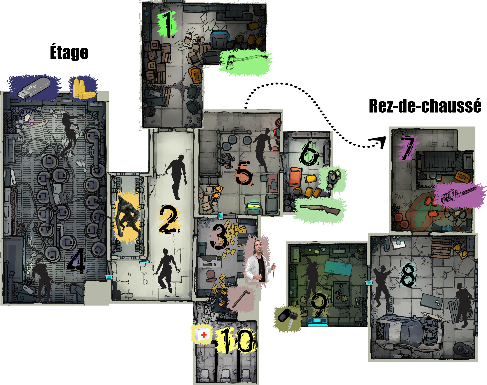

Un scénario Sombre Zéro (le jeu de rôle de Johan Scipion) pour 3 à 5 joueurs, d'une durée d'environ 45min, dans un laboratoire envahi de zombies, avec une part d'exploration, les lieux étant progressivement révélés aux joueurs.

Ce scénario nécessite d'imprimer au moins 8 pages couleur, sur papier standard, et un peu de découpage / pliage préalable.
Les PJs sont un groupe de détenus et le gardien de prison qui les escorte. Pour raccourcir leur peine, ils ont accepté de participer à des expérimentations biologiques.
Soyez attentifs, ces informations seront cruciales à votre survie...
Il y a quelques jours, vous vous êtes portés volontaires pour participer à un protocole expérimental, dans un laboratoire militaire partenaire de votre établissement pénitentiaire. Pour les détenus, cela va vous permettre de bénéficier d'une remise de peine. Pour Hadley & Edgecomb, les matons, ce n'est pas la première fois que vous accompagnez des taulards au « Labo », et la prime à la clef est très motivante...
Il y a 1h, votre véhicule est arrivé au sous-sol du « Labo », et Hadley & Edgecomb vous ont escortés au premier étage du bâtiment, par l'ascenseur. Vous avez été installés dans des fauteuils inclinables dans une salle confortable : le personnel était cordial et ils diffusaient même la radio. Et puis vous avez entendu des cris, et tout a dégénéré...
Il y a 10min, très vite ça a été la panique dans tout l'étage : des cavalcades, des hurlements, des bruits de porte défoncée... Et puis une infirmière a déboulé dans la pièce, poursuivie par un laborantin dont il manquait la moitié du crâne. L'infirmière a trébuché et, sous vos yeux terrifiés, son poursuivant s'est mis à la dévorer vivante ! Complètement dépassés, Hadley & Edgecomb ont décidé de vous libérer de vos chaînes, et vous vous êtes tous mis à courir à perdre haleine pour fuir cette horde de zombies. Mais Edgecomb s'est fait rattraper...
Il y a 10 secondes, alors qu'Edgecomb se faisait déchiqueter par les zombies en hurlant, Hadley lui a tiré une balle dans la tête pour abréger ses souffrances. Vous vous êtes tous engouffrés dans une pièce au hasard et avez barricadé la porte derrière vous.
Seules les règles de base de Sombre Zéro sont nécessaires pour jouer ce scénario. Elles sont détaillées dans Sombre n°6. Sombre n°3 est également un très bonne introduction à Sombre Zéro, avec l'excellent scénario Deep Space Gore. Ce scénario emploie la variante premium.
⚠️ Les 5 personnages des joueurs sont composés d'un trio de tuiles adossées : chaque bande de 3 tuiles doit être découpée d'un bloc, puis 2 pliures sont à réaliser pour glisser à l'intérieur les informations secrètes de chaque PJ.
⚠️ Les 2 PNJs (Sujet #314 et Herman) sont composés d'un duo de tuiles adossées, à découper d'un bloc : ils ne nécessitent qu'une unique pliure.
Enfin, les armes à feu et les tuiles « Zombie » sont à découper individuellement.
Toutes les pièces possèdent un recto et un verso : elles doivent être repliées une fois découpées. Un point de colle peut être ajouté à l'intérieur pour s'assurer qu'elles resteront bien plates. Certaines pièces possèdent un verso « transformé », d'autres un verso uni.
La tagline de chaque personnage indique le crime pour lequel il est derrière les barreaux.
Les rôles peuvent être attribués aléatoirement, mais il vaut mieux confier celui du gardien pénitentiaire, Hadley, à un·e joueur·euse qui est à l'aise avec la confrontation, car ce personnage peut se sentir « seul contre tous ».
Avant de distribuer les tuiles des PJs, pensez à cacher la tuile Revolver dans celle d'Hadley, et le Surin dans celle de Damian.
⚠️ Tous les personnages savent tirer avec une arme à feu (ils ont le trait Tir).
Les pièces sont à révéler aux joueurs une par une, au fur et à mesure qu'ils les visitent, en les plaçant du côté « intact », sans spores ni dégâts visibles.
La partie commence dans cette pièce pour les PJs.
La porte dans l'angle est barricadée : c'est par là que sont arrivés les PJs. Une meute de zombies rôde de l'autre côté.
Le seul autre accès est une double porte battante (sans poignée) donnant vers le couloir (2).
Si un PJ fouille l'endroit, il met la main sur une hache d'incendie.

Deux zombies attendent patiemment les PJs ici. Soignez cette première rencontre, c'est le moment de décrire aux joueurs toute l'horreur de ces zombies. Ils errent hagards, ensanglantés, et n'ont plus rien d'humain dans leur comportement
S'ils sont discrets, les PJs auront le temps de s'approcher du premier pour l'attaquer sans qu'il n'ait le temps de réagir au premier tour de combat. Le second mettra un tour entier à rejoindre la zone du couloir où se trouve son collègue. Le couloir est trop étroit et éclairé pour se faufiler sans être remarqué par eux.
La porte de la salle des spécimens (4) est fermée par un scanner digital.
Devant le caisson, un panneau digital questionne en lettres clignotantes : « SORTIE ? » Quiconque appuie dessus déclenche son ouverture et la libération du sujet #314, décrit dans la section « Événements » plus loin.
Un local comportant un bureau avec chaise et ordinateur, ainsi que des grands classeurs de rangement métalliques. Les documents stockés dans cette pièce sont des archives administratives sans utilité.
Herman se cache dans un des meubles de rangement. Si les PJs ne fouillent pas les lieux, il finira pas trahir sa présence par du bruit.
Une porte indique un accès au rez-de-chaussé (5), mais est protégée par un scanner digital.
La tuile de cette pièce doit être retournée une fois que le sujet #314 s'y est précipité et l'a ravagé. La section « Événements » plus loin fournit plus de détails.
Cette salle contient une vingtaine des cuves cylindriques verticales, dans lesquelles flottent des corps humains... Le premier PJ a examiner les cuves reconnaîtra un ancien camarade taulard dans l'une d'elles.
Faites en sorte, dans vos descriptions, que cette pièce paraisse la plus inquiétante et lugubre de tout le « Labo » : il y a un cadavre en face de la porte d'entrée et du sang sur les murs, les spécimens des cuves semblent dévisager les PJs silencieusement, etc.
Deux zombies rôdent dans la pièce, en lambeaux de blouses blanches. Comme dans le couloir, le premier peut être pris par surprise si les PJs sont discrets, et le second mettra un tour à rejoindre l'entrée de la pièce.
Sur le côté de la pièce opposé à la porte d'entrée, un grand plan de travail comporte de nombreux papiers. Une partie sont répandus au sol. S'ils sont examinés par les PJs, ils apprendront que des armes bactériologiques sont développées ici. Il est également fait mention de « spores » capables de « tout nettoyer ».
Trois balles pour revolver et une clef USB grise peuvent être trouvées sur ce plan de travail : il s'agit des données recherchées par Markus.
En entrant à droite, l'écran d'un terminal de contrôle brille d'une lumière jaune. Il affiche clairement ce message :
Brèche détectée.
Risque d'explosion imminente.
Voulez-vous libérer les spores ?
Il n'est rien possible de faire d'autre sur ce terminal. Si quelqu'un valide cette demande, la section « Événements » plus loin détaille ce qu'il se passe.
Un employé du laboratoire gît assis au sol, de dos face à la porte d'entrée. Ce n'est pas visible de dos, mais le pauvre est en train de se transformer en zombie. Après 2 tours, il attaquera le PJ le plus proche.
Un PJ fouillant cette pièce trouvera le fusil à seringues hypodermiques et un masque à gaz, permettant de ne pas être Embrumé en présence des spores, dans la salle des spécimens. Cette pièce ne contient rien d'autre d'utile.
On accède à cette pièce en descendant les escaliers de la cage d'escalier à l'étage (5). Comme il s'agit d'un autre niveau du bâtiment, placez cette pièce à part sur votre table de jeu.
Cette pièce contient des bidons entassés, dont certains répandent au sol un liquide visqueux, corrosif et puant.
Si un PJ fouille l'endroit, il met la main sur une clef à molette, suffisamment horrifique pour pouvoir servir d'arme.

De l'autre côté de l'unique porte de la pièce, on peut entendre des grognements...
L'ouverture de la porte révèle un petit garage et... une voiture en cours de réparation. Enfin, un espoir pour les joueurs !
Mais la première préoccupation des PJs sera d'abord les deux zombies présents dans la pièce, qui attaqueront rapidement, et simultanément, le premier à y mettre les pieds.
Une inspection du véhicule révélera que cette voiture semble en état de marche, mais qu'il manque les clefs. Impossible pour les PJs de la faire démarrer sans.
De plus, la voiture ne comporte que 4 places serrées (voir moins, à la discrétion du MJ).
Le garage comporte deux autres accès : une porte verrouillée par un scanner digital et un grand portail métallique coulissant donnant accès à une rampe de sortie dans la rue, à l'extérieur. Des interstices dans le portail permettent de distinguer que de nombreux zombies rôdent dans la rue : ils ne sont pas à proximité directe mais détecteront immanquablement tout bruit ou mouvement du portail.
En entrant, face à la porte, les PJs découvrent le cadavre, au sol, d'un laborantin qui s'est visiblement suicidé en s'étranglant avec sa cravate et une broyeuse à papier. Néanmoins, si les PJs ne l'inspectent pas prudemment, ce cadavre se révélera être un zombie et attaquera dans le dos tout PJ qui examinerait la pièce.
Il y un ordinateur allumé au fond de ce petit laboratoire. Un message dans un coin de l'écran mentionne « clef USB manquante, insérez-la ». Ce PC ne permet pas aux PJs d'accéder à l'extérieur du « Labo », mais deux choses restent possibles :
consulter le contenu de la clef USB, si elle a été récupérée et que les PJs y songent : elle contient tout ce qu'il y a à savoir sur l'origine des zombies, créés dans ce laboratoire, ainsi que les instructions pour concevoir un vaccin.
déclencher la libération des spores :
Brèche détectée.
Risque d'explosion imminente.
Voulez-vous libérer les spores ?
La clef de la voiture pourra être trouvée dans une poche du zombie.

Entrer dans cette pièce en présence du sujet #314 provoquera immédiatement son ire et un affrontement.
De l'autre côté de la porte des WCs, des dizaines de zombies dévorent bruyamment des cadavres dans un long couloir exigu. Ils ont peur du sujet #314, mais si l'un d'eux aperçoit un humain, 1d6 zombies foncent immédiatement vers celui-ci et déboulent dans la pièce, un par un, à partir du tour suivant.
En dehors des débris et du cadavre à demi-dévoré de la victime du sujet #314, cette pièce contient un kit de premiers secours accroché sur un mur, et visible du bureau. Ce kit de soins est un objet récupérable par les PJs, librement transportable et échangeable entre eux. Il peut être utilisé 3 fois. Chaque utilisation nécessite d'y consacrer un tour entier et permet de soigner une blessure, d'un personnage adjacent ou soi-même.

Si quelqu'un touche au panneau devant le caisson, cela l'ouvre et le sujet #314 s'en échappe, enragé. Voici ses actions, tour par tour :
↩️ Retournez alors la tuile 3, et ajoutez la tuile 10.
La brèche créée dans la cloison révèle un tuyau métallique, en partie arraché. Il est facile de s'en saisir et de l'employer comme une arme.
S'il n'est pas dérangé, le sujet #314 reste alors plusieurs tours dans les WCs à se repaître de viande humaine sur un cadavre...
Si un personnage, PJ ou Herman, valide la proposition du terminal de la cage d'escalier ou du petit labo, un violent tremblement secoue le bâtiment.
↩️ La prochaine fois que les PJs entrent dans les salle 2, 4 ou 8, retournez-les face « transformée ». Si des PJs sont actuellement sur certaines de ces tuiles, retournez-les immédiatement.
Conséquences concrètes de l'éclosion des spores :
Les zombies, en dehors du sujet #314 et des PJs transformés, sont relativement stupides et maladroits. Il est donc possible de se défendre face à eux sans arme, si les PJs le demandent, par exemple pour les immobiliser, les repousser ou les faire tomber au sol.
Un jet est effectué pour chaque personnage, comme d'habitude lors d'un combat. Un PJ sans arme n'inflige jamais de dommage, mais s'il réussit son jet, il parvient à ses fins.
Afin d'accélérer les combats et d'éviter la succession lassante des échecs répétés, j'applique la routine suivante : en cas d'échec mutuel d'adversaires directs, chacun subit 1 Blessure.
Dans la plupart des salles, sans obstacle, en un seul tour un personnage peut atteindre une des portes de la pièce. Dans les deux plus grandes salles (2 et 4), cela dépend de la position du personnage dans la pièce : s'il est à l'opposé d'une porte, cela nécessite deux tours.
Les zombies sont tout aussi rapides, mais mettent par contre du temps à réagir à une présence humaine : ils mettent systématiquement un tour, voir deux à la discrétion du MJ, à émerger de leur torpeur initiale, avant d'attaquer les humains à proximité.
Seules les empreintes de Hadley & Herman peuvent les activer et ouvrir les portes auxquelles ils sont adossés.
Curieusement, les scanners ne reconnaissent plus les empreintes des zombies, probablement à cause de la transformation qu'ils ont subi. Laissez néanmoins les joueurs découvrir ça par eux même en tranchant la main de l'un d'eux à la hache. La main tranchée de Hadley ou d'Herman continuera par contre à les activer, s'ils n'ont pas été contaminés.
Tous les personnages savent tirer avec une arme à feu (ils ont le trait Tir).

Hadley, le maton, débute avec un revolver chargé, pouvant être utilisé 3 fois : à chaque tir, il faut tourner la tuile de l'arme, pour indiquer la dépense de munitions. Les dommages sont lus sur le dés, comme avec n'importe quelle arme.
Un fusil à seringues hypodermiques se trouve dans la réserve (6). Comme le revolver, il contient juste assez de munitions pour tirer 3 fois. En cas de tir réussi, la cible ne reçoit aucun dommage mais plonge dans le sommeil pour 1d6 tours.

Le tuyau métallique est une arme improvisée fragile : chaque utilisation de cette arme l'endommage, jusqu'à ce qu'elle devienne inutilisable après 3 usages.
Lorsqu'un PJ meurt, s'il a été au moins une fois mordu par un zombie, et si le coup qui l'a tué ne lui a pas détruit ou détaché la tête, alors ce PJ devient un zombie.
Donnez à ce·tte joueur·euse une tuile Zombie et expliquez-lui ses nouveaux objectifs : dévorer tout humain à proximité ! Ses actions se limitent désormais à se déplacer et tenter de mordre des humains.
Une fois les spores libérées, respirer l'air de la salle des spécimens fait devenir Embrumé après un tour passé dans cette pièce. Dans le couloir et en-dessous, dans le garage, les spores sont trop peu nombreux pour faire effet.
Un personnage qui devient Embrumé perd toutes ses facultés mentales et reste simplement debout, hébété. Un personnage Embrumé tiré hors de la salle des spécimens reprend immédiatement ses esprits.
Un PJ peut retenir sa respiration pendant 3 tours si Indemne, pendant 2 tours si Blessé, et pendant 1 tour si Mutilé, permettant ainsi de ne pas respirer l'air intoxiqué par les spores.
Apparence : des humains aux blessures très visibles, qu'il s'agisse de membres sanguinolents ou de viscères dégoulinantes. Une observation plus attentive révélera également une présence végétale en eux : des racines, des bourgeons, de la mousse, de l'écorce...
Comportement : s'ils n'ont aucun humain en vue, ils restent statiques et rôdent lentement dans la pièce où ils se trouvent.
Dès qu'ils aperçoivent un humain, ils mettent un tour à émerger de leur torpeur (voir deux à la discrétion du MJ), avant de se ruer sur lui et de tenter de le mordre. Leur morsure ne fait qu'un seul dégât, mais contamine le personnage, qui se transformera en zombie à sa mort.

Apparence : blouse blanche, antipathique et crâneur, cf. illustration
Comportement : Herman est très lâche. Il est initialement caché dans un placard du bureau. Ses objectifs sont, dans l'ordre du plus au moins important :
Herman peut activer les scanners digitaux, tout comme Hadley.
Si un PJ l'interroge à propos du terminal et de la libération des spores, il aura une illumination et s'écrira « Mais oui, bien sûr ! » et dans la foulée appuiera sur le bouton de validation, s'il est à proximité et qu'il n'a pas encore été pressé, provoquant la libération des spores. Il pourra expliquer qu'il s'agit d'une procédure d'urgence, qu'il est donc parfaitement logique de déclencher maintenant... mais dont il ne connaît pas les conséquences exactes.
Si Markus se manifeste pour obtenir les données, il expliquera qu'elles sont sur une clef USB grise, dans la salle des spécimens. Il a bien trop la trouille pour aller la chercher lui-même.

Apparence : un énorme et monstrueux zombie
Trait : le sujet #314 possède le trait Résistance, il ne reçoit que 1 Blessure par attaque.
Comportement : le sujet #314 est bien plus violent et proactif que ses congénères. Son comportement initial lors de sa libération du caisson est décrit dans une section dédiée à cet événement. Ensuite, s'il n'est pas dérangé, il reste alors plusieurs tours dans les WCs à se repaître de viande humaine sur un cadavre...
Puis, à un moment propice déterminé par le MJ, il se mettra à traquer les PJs. Si des portes s'interposent, il les défoncera avec acharnement, les réduisant en miettes en 1d6 tours.
Plusieurs fins sont possibles.
La fin heureuse la plus probable est que les PJs survivants trouvent la voiture, les clefs, ouvrent le portail du garage et s'enfuient à toute berzingue de ce lieu damné.
Points bonus s'ils ont mis la main sur la clef USB, et jackpot s'ils ont découvert ce qu'elle contenait et prévoient de sauver l'humanité avec !
Bien sûr, les possibilités de Total Party Kill sont très nombreuses, surtout si les PJs font face au sujet #314. Ils peuvent aussi progressivement tous être contaminés et s'entre-dévorer, ou encore s'aventurer innocemment dehors sans voiture, ce qui finira dans le sang s'ils ne font pas rapidement demi-tour.
Sombre JdR - Zombies playlist @ YouTube, qui inclut notamment :
 Ce scénario a été conçu par Lucas Cimon et est placé sous licence
Creative Commons BY-NC-SA 4.0
.
Ce scénario a été conçu par Lucas Cimon et est placé sous licence
Creative Commons BY-NC-SA 4.0
.
Les fichiers sources ayant permis de générer ce PDF sont disponibles sur GitHub. Version : 1.0
Ce scénario est diffusé à prix libre. Sa conception a nécessité un travail conséquent. Si vous souhaitez soutenir mes projets, vous pouvez me faire un don sur lucas-c.itch.io/sombre-lab-escape.
Je serais aussi ravi d'avoir vos retours sur ce scénario si vous le faites jouer ! Racontez-moi comment s'est passée votre partie via un commentaire itch.io ou sur mon blog.
Merci aux illustrateurs qui ont placé leur magnifique travail sous licence Creative Commons :
Merci à Khurasan, l'auteur de la police Freedom 45.
Merci à Julien DeathAmbre De Monte pour la routine LiveWire.
Merci aux testeurs de ce scénario : Aurélien, Matthieu, Alarig, Aymeric, Clément, Émilien, Morgan, Sébastien. Merci aux relecteurs : Matthieu et Julien DeathAmbre De Monte.
Merci enfin aux développeurs des logiciels libres employés : le navigateur Firefox, le logiciel de dessin Gimp, l'éditeur de texte Notepad++, le lecteur de PDF Sumatra PDF, le language de programmation Python, les bibliothèques de code fpdf2, livereload, pypdf & weasyprint.